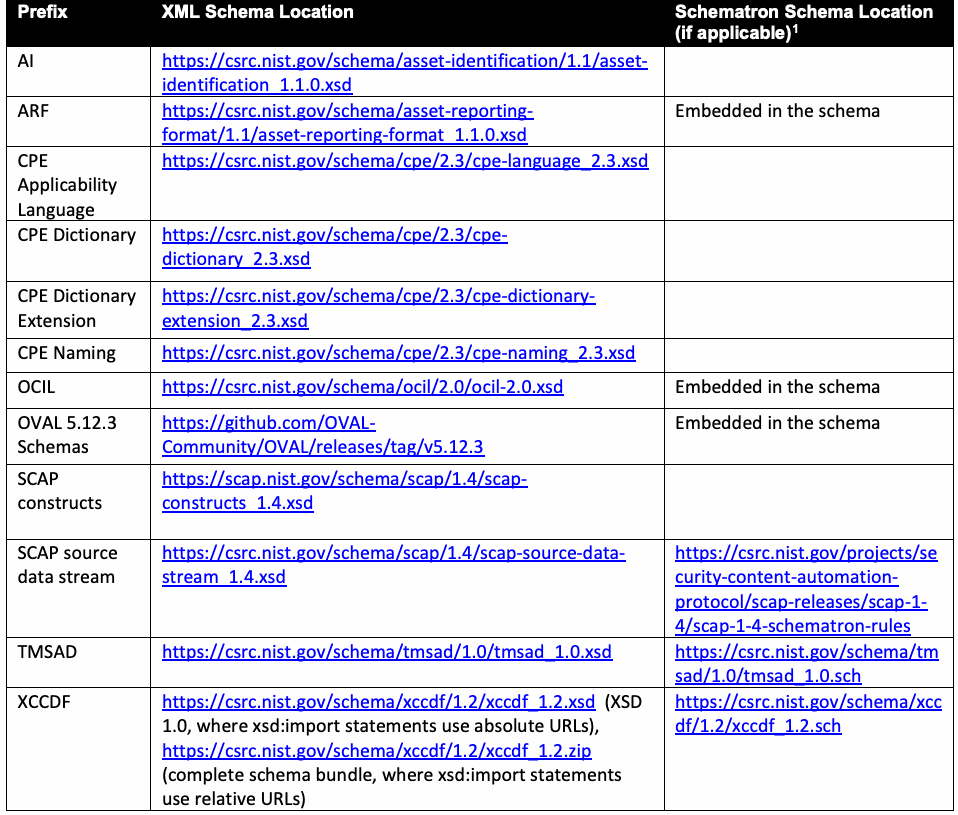

NIST SP 800-126A Rev. 4 日本語訳
英語タイトル : SCAP 1.4 Component Specification Version Updates: An Annex to NIST SP 800-126r4日本語タイトル : SCAP 1.4コンポーネント仕様のバージョン更新：NIST SP 800-126r4の附属書
公開日 : 2026-06-08
原文URL : https://csrc.nist.gov/pubs/sp/800/126/a/r4/final
翻訳編集 : 自動生成, 原文取得日 : 2026-09-27, 訳文 : 121 / 121 ブロック
[要約] SP 800-126A Rev. 4 は、SP 800-126r4 の附属書として、SCAP 1.4 のコンポーネント仕様におけるマイナーバージョン更新を示す文書です。SCAP は自動化された構成・脆弱性・パッチの確認やセキュリティ測定、技術的管理策への準拠を支援するフレームワークで、本書はメジャーバージョン更新とマイナーバージョン更新の定義、SCAP 1.4 の更新、文書管理を扱います。SP 800-126r4 の内容を拡張し、両文書とスキーマ一式の組み合わせで SCAP 1.4 を定義することが目的で、読者は SP 800-126r4 に精通していることが推奨されます。
有志による非公式の日本語訳です。
NIST Special Publication 800
NIST特別刊行物800
NIST SP 800-126Ar4
NIST SP 800-126Ar4
SCAP 1.4 Component Specification
SCAP 1.4 コンポーネント仕様
Version Updates
バージョン更新
An Annex to NIST SP 800-126r4
NIST SP 800-126r4 への附属書
Dragos Prisaca Stephen Quinn
Dragos Prisaca Stephen Quinn
This publication is available free of charge from: https://doi.org/10.6028/NIST.SP.800-126Ar4
本出版物は以下から無料で入手可能である: https://doi.org/10.6028/NIST.SP.800-126Ar4
NIST Special Publication 800
NIST特別刊行物800
NIST SP 800-126Ar4
NIST SP 800-126Ar4
SCAP 1.4 Component Specification
SCAP 1.4 コンポーネント仕様
Version Updates
バージョン更新
An Annex to NIST SP 800-126r4
NIST SP 800-126r4 への附属書
Dragos Prisaca Stephen Quinn Computer Security Division
Dragos Prisaca Stephen Quinn コンピュータセキュリティ部門
Information Technology Laboratory
情報技術研究所
This publication is available free of charge from: https://doi.org/10.6028/NIST.SP.800-126Ar4
本出版物は以下から無料で入手可能である: https://doi.org/10.6028/NIST.SP.800-126Ar4
June 2026
2026年6月
［米国商務省の紋章。公的な標章のため、この非公式サイトには掲載していない。原本 PDF を参照。］
U.S. Department of Commerce Howard Lutnick, Secretary of Commerce
米国商務省 ハワード・ラトニック商務長官
National Institute of Standards and Technology
米国国立標準技術研究所
Arvind Raman, NIST Director and Under Secretary of Commerce for Standards and Technology
アーヴィンド・ラマン、NIST所長兼標準・技術担当商務次官
Certain equipment, instruments, software, or materials, commercial or non-commercial, are identified in this paper in order to specify the experimental procedure adequately. Such identification does not imply recommendation or endorsement of any product or service by NIST, nor does it imply that the materials or equipment identified are necessarily the best available for the purpose.
実験手順を適切に規定するため、本稿では特定の装置、計測器、ソフトウェア、または材料（商用または非商用）を明示している。このような明示は、NISTによるいかなる製品またはサービスの推奨または支持を意味するものではなく、また明示された材料または装置が必ずしもその目的に利用可能な最善のものであることを意味するものでもない。
There may be references in this publication to other publications currently under development by NIST in accordance with its assigned statutory responsibilities. The information in this publication, including concepts and methodologies, may be used by federal agencies even before the completion of such companion publications. Thus, until each publication is completed, current requirements, guidelines, and procedures, where they exist, remain operative. For planning and transition purposes, federal agencies may wish to closely follow the development of these new publications by NIST.
本出版物には、NISTが割り当てられた法定責務に基づき現在策定中の他の出版物への言及が含まれている場合がある。本出版物に含まれる情報（概念および方法論を含む）は、そうした関連出版物の完成前であっても、連邦機関によって使用されてよい。したがって、各出版物が完成するまでは、現行の要件、ガイドライン、および手順が存在する場合、それらが引き続き有効である。計画および移行の目的から、連邦機関はNISTによるこれらの新規出版物の策定状況を綿密にフォローすることを希望する場合がある。
Organizations are encouraged to review all draft publications during public comment periods and provide feedback to NIST. Many NIST cybersecurity publications, other than the ones noted above, are available at https://csrc.nist.gov/publications.
組織は、パブリックコメント期間中にすべてのドラフト出版物を確認し、NISTにフィードバックを提供することが推奨される。上記の出版物以外の多くのNISTサイバーセキュリティ出版物は、https://csrc.nist.gov/publications で入手可能である。
Authority
権限
This publication has been developed by NIST in accordance with its statutory responsibilities under the Federal Information Security Modernization Act (FISMA) of 2014, 44 U.S.C. § 3551 et seq., Public Law (P.L.) 113-283. NIST is responsible for developing information security standards and guidelines, including minimum requirements for federal information systems, but such standards and guidelines shall not apply to national security systems without the express approval of appropriate federal officials exercising policy authority over such systems. This guideline is consistent with the requirements of the Office of Management and Budget (OMB) Circular A-130.
本出版物は、2014年連邦情報セキュリティ近代化法（FISMA）、合衆国法典第44編第3551条以下、公法（P.L.）113-283に基づく法定責務に従ってNISTにより作成された。NISTは、連邦情報システムに対する最低限の要件を含む情報セキュリティ基準およびガイドラインを策定する責任を負っているが、そのような基準およびガイドラインは、当該システムに対して方針上の権限を行使する適切な連邦職員の明示的な承認がない限り、国家安全保障システムには適用されない。本ガイドラインは、行政管理予算局（OMB）Circular A-130の要件と整合している。
Nothing in this publication should be taken to contradict the standards and guidelines made mandatory and binding on federal agencies by the Secretary of Commerce under statutory authority. Nor should these guidelines be interpreted as altering or superseding the existing authorities of the Secretary of Commerce, Director of the OMB, or any other federal official. This publication may be used by nongovernmental organizations on a voluntary basis and is not subject to copyright in the United States. Attribution would, however, be appreciated by NIST.
本出版物のいかなる内容も、法定権限に基づき商務長官によって連邦機関に対して義務的かつ拘束力を持つものとされた基準およびガイドラインに矛盾するものと受け止められるべきではない。また、これらのガイドラインが、商務長官、OMB長官、またはその他の連邦職員の既存の権限を変更する、またはそれに取って代わるものとして解釈されるべきでもない。本出版物は、非政府組織が任意で使用してよく、米国における著作権の対象ではない。ただし、出典を明示していただければNISTとして幸いである。
NIST Technical Series Policies
Copyright, Use, and Licensing Statements
NIST Technical Series Publication Identifier Syntax
NISTテクニカルシリーズのポリシー
著作権、使用、ライセンスに関する声明
NISTテクニカルシリーズ出版物識別子構文
Publication History
Approved by the NIST Editorial Review Board on 2026-04-23
出版履歴
2026-04-23にNIST編集審査委員会により承認
How to Cite this NIST Technical Series Publication
Prisaca D, Quinn SD (2026) SCAP 1.4 Component Specification Version Updates: An Annex to NIST SP 800-126r4. (National Institute of Standards and Technology, Gaithersburg, MD), NIST Special Publication (SP) NIST SP 800-126Ar4. https://doi.org/10.6028/NIST.SP.800-126Ar4
本NISTテクニカルシリーズ出版物の引用方法
Prisaca D, Quinn SD (2026) SCAP 1.4 Component Specification Version Updates: An Annex to NIST SP 800-126r4. (National Institute of Standards and Technology, Gaithersburg, MD), NIST Special Publication (SP) NIST SP 800-126Ar4. https://doi.org/10.6028/NIST.SP.800-126Ar4
Author ORCID iDs
Dragos Prisaca: 0009-0007-7361-8433
Stephen Quinn: 0000-0003-1436-684X
著者のORCID iD
Dragos Prisaca: 0009-0007-7361-8433
Stephen Quinn: 0000-0003-1436-684X
Contact Information
scap@nist.gov
連絡先情報
scap@nist.gov
National Institute of Standards and Technology Attn: Computer Security Division, Information Technology Laboratory 100 Bureau Drive (Mail Stop 8930) Gaithersburg, MD 20899-8930
National Institute of Standards and Technology 宛先: Computer Security Division, Information Technology Laboratory 100 Bureau Drive (Mail Stop 8930) Gaithersburg, MD 20899-8930
Additional Information
Additional information about this publication is available at https://csrc.nist.gov/pubs/sp/800/126/a/r4/final, including related content, potential updates, and document history.
追加情報
本出版物に関する追加情報（関連コンテンツ、更新の可能性、文書の履歴を含む）は、https://csrc.nist.gov/pubs/sp/800/126/a/r4/final で入手可能である。
All comments are subject to release under the Freedom of Information Act (FOIA).
すべてのコメントは、情報公開法（FOIA）に基づく公開の対象となる。
Abstract
概要
The Security Content Automation Protocol (SCAP) is a multi-purpose framework of component specifications that support automated configuration, vulnerability, patch checking, security measurement, and technical control compliance activities. The SCAP version 1.4 specification is defined by the combination of NIST SP 800-126r4, a set of schemas, and this document. This document allows the use of specific minor version updates to SCAP 1.4 component specifications and particular Open Vulnerability and Assessment Language (OVAL) schema versions to provide additional functionality for SCAP 1.4 without causing any loss of existing functionality.
Security Content Automation Protocol（SCAP）は、自動化された構成、脆弱性およびパッチのチェック、セキュリティ測定、ならびに技術的管理策へのコンプライアンスに関する活動を支援するコンポーネント仕様の多目的フレームワークである。SCAPバージョン1.4の仕様は、NIST SP 800-126r4、一連のスキーマ、および本文書の組み合わせによって定義される。本文書は、既存の機能を一切損なうことなくSCAP 1.4に追加機能を提供するために、SCAP 1.4コンポーネント仕様の特定のマイナーバージョン更新、および特定のOpen Vulnerability and Assessment Language（OVAL）スキーマバージョンの使用を許可する。
Keywords
キーワード
eXtensible Configuration Checklist Description Format (XCCDF); Open Vulnerability and Assessment Language (OVAL); security automation; security configuration; Security Content Automation Protocol (SCAP).
eXtensible Configuration Checklist Description Format (XCCDF); Open Vulnerability and Assessment Language (OVAL); セキュリティ自動化; セキュリティ構成; Security Content Automation Protocol (SCAP)。
Reports on Computer Systems Technology
コンピュータシステム技術に関する報告
The Information Technology Laboratory (ITL) at the National Institute of Standards and Technology (NIST) promotes the U.S. economy and public welfare by providing technical leadership for the Nation’s measurement and standards infrastructure. ITL develops tests, test methods, reference data, proof of concept implementations, and technical analyses to advance the development and productive use of information technology. ITL’s responsibilities include the development of management, administrative, technical, and physical standards and guidelines for the cost-effective security and privacy of other than national security-related information in federal information systems. The Special Publication 800-series reports on ITL’s research, guidelines, and outreach efforts in information system security, and its collaborative activities with industry, government, and academic organizations.
米国国立標準技術研究所（NIST）の情報技術研究所（ITL）は、米国の計測および標準の基盤に対する技術的リーダーシップを提供することにより、米国経済と公共の福祉を促進している。ITLは、情報技術の開発と生産的な利用を前進させるために、テスト、テスト手法、参照データ、概念実証の実装、および技術的分析を開発している。ITLの責務には、連邦情報システムにおける国家安全保障関連以外の情報について費用対効果の高いセキュリティとプライバシーを実現するための、管理面、運用面、技術面、および物理面の基準およびガイドラインの策定が含まれる。Special Publication 800シリーズは、情報システムセキュリティにおけるITLの研究、ガイドライン、およびアウトリーチ活動、ならびに産業界、政府機関、および学術機関との協働活動について報告している。
Patent Disclosure Notice
特許開示に関する通知
NOTICE: ITL has requested that holders of patent claims whose use may be required for compliance with the guidance or requirements of this publication disclose such patent claims to ITL. However, holders of patents are not obligated to respond to ITL calls for patents and ITL has not undertaken a patent search in order to identify which, if any, patents may apply to this publication.
通知：ITLは、本文書のガイダンスまたは要件への準拠に使用が必要となる可能性のある特許クレームの保有者に対し、そのような特許クレームをITLに開示するよう要請している。ただし、特許保有者はITLからの特許開示要請に応じる義務はなく、ITLは、本文書に適用される可能性のある特許があるとすればそれがどれであるかを特定するための特許調査を実施していない。
As of the date of publication and following call(s) for the identification of patent claims whose use may be required for compliance with the guidance or requirements of this publication, no such patent claims have been identified to ITL.
発行日時点で、かつ本文書のガイダンスまたは要件への準拠に使用が必要となる可能性のある特許クレームの特定を求める呼びかけの後において、そのような特許クレームはITLに対して特定されていない。
No representation is made or implied by ITL that licenses are not required to avoid patent infringement in the use of this publication.
本文書の使用において特許侵害を回避するためにライセンスが不要であるという表明は、ITLによって明示的にも黙示的にも行われていない。
Table of Contents
目次
1. Introduction — 1
1. はじめに — 1
2. Minor Version Updates in SCAP 1.4-Component Specifications — 3
2. SCAP 1.4コンポーネント仕様におけるマイナーバージョン更新 — 3
3. Document Management — 5
3. 文書管理 — 5
Appendix A. List of Symbols, Abbreviations, and Acronyms — 6
付録A. 記号、略語、および頭字語の一覧 — 6
Appendix B. Glossary — 7
付録B. 用語集 — 7
Appendix C. Change Log — 8
付録C. 変更履歴 — 8
List of Tables
表一覧
Table 1. SCAP XML Schema and Schematron Schema Locations — 4
表1. SCAP XMLスキーマおよびSchematronスキーマの場所 — 4
1. Introduction
1. はじめに
Specification versioning is the process of denoting a revision to a specification by changing its version number. For example, the Security Content Automation Protocol (SCAP) specification documents are occasionally updated, and these updates trigger an increase in the SCAP version number (e.g., 1.2, 1.3, 1.4). This specification versioning is challenging because there is no standard convention or terminology for it; each specification imparts different meanings into its version numbers. For example, moving from version 3.4 to version 3.5 might break backward compatibility for one specification, add new functionality for another specification, and simply correct an error in a third specification.
仕様のバージョニングとは、仕様のバージョン番号を変更することによってその改訂を示すプロセスである。例えば、Security Content Automation Protocol（SCAP）の仕様文書は時折更新され、これらの更新によってSCAPのバージョン番号の増加（例：1.2、1.3、1.4）がトリガーされる。この仕様のバージョニングには標準的な慣例や用語が存在しないため困難を伴い、仕様ごとにバージョン番号に持たせる意味が異なっている。例えば、バージョン3.4からバージョン3.5への移行は、ある仕様では後方互換性を破る可能性があり、別の仕様では新しい機能を追加し、さらに別の仕様では単にエラーを修正するだけということもある。
This document defines two key terms for SCAP 1.4 component specification versioning: major and minor version updates. A major version update is a revision of a specification that breaks backward compatibility with the previous revision of the specification in numerous significant ways. A minor version update is a revision of a specification that may add or enhance functionality, fix bugs, and make other changes from the previous revision, but the changes have minimal impact, if any, on backward compatibility.
本文書では、SCAP 1.4コンポーネント仕様のバージョニングに関して、メジャーバージョン更新とマイナーバージョン更新という2つの主要な用語を定義する。メジャーバージョン更新とは、多くの重要な点において仕様の以前の改訂版との後方互換性を損なう仕様の改訂である。マイナーバージョン更新とは、機能の追加や強化、バグ修正、および以前の改訂版からのその他の変更を行う可能性はあるものの、それらの変更が後方互換性に与える影響が仮にあったとしても最小限にとどまる仕様の改訂である。
1.1. Purpose and Scope
1.1. 目的および適用範囲
The purpose of this document is to extend the contents of NIST Special Publication (SP) 800-126r4 (Revision 4) so that SCAP 1.4 is defined by the combination of the two documents and the set of schemas. Readers should be familiar with SP 800-126r4 before reading this document.
本文書の目的は、NIST Special Publication（SP）800-126r4（改訂第4版）の内容を拡張し、これら2つの文書および一連のスキーマの組み合わせによってSCAP 1.4が定義されるようにすることである。読者は、本文書を読む前にSP 800-126r4に精通していることが推奨される。
This document can be used to make approved version updates - both minor and major - to component specifications that are already included in SCAP 1.4 by SP 800-126r4. Approved major-version updates SHALL be limited to those explicitly listed in sect. 2.2 of this document; all other major-version changes, and any new component specifications that are not included in SP 800-126r4, SHALL be deferred to a future version of SCAP as documented in a future revision of SP 800-126.
本文書は、SP 800-126r4によってSCAP 1.4にすでに含まれているコンポーネント仕様に対して、承認されたバージョン更新（マイナーおよびメジャーの両方）を行うために使用できる。承認されたメジャーバージョン更新は、本文書のセクション2.2に明示的に記載されているものに限定されなければならない（SHALL）。その他のすべてのメジャーバージョンの変更、およびSP 800-126r4に含まれていない新規のコンポーネント仕様は、SP 800-126の将来の改訂版で文書化されるSCAPの将来のバージョンに延期されなければならない（SHALL）。
Each SCAP 1.4 extension specified in this document takes one of two forms. First, it may allow the use of particular version updates to SCAP 1.4 component specifications - including minor version updates, explicitly approved major-version updates, or particular Open Vulnerability and Assessment Language (OVAL) versions included in SCAP 1.4. Second, it may specify one or more requirements for using these updates or OVAL schemas in an SCAP 1.4-conformant manner.
本文書で規定されている各SCAP 1.4拡張は、2つの形態のいずれかをとる。第1に、SCAP 1.4コンポーネント仕様に対する特定のバージョン更新（マイナーバージョン更新、明示的に承認されたメジャーバージョン更新、またはSCAP 1.4に含まれる特定のOpen Vulnerability and Assessment Language（OVAL）バージョンを含む）の使用を許可する場合がある。第2に、SCAP 1.4に準拠した方法でこれらの更新またはOVALスキーマを使用するための1つ以上の要件を規定する場合がある。
This document specifies exactly which component specification version updates and OVAL platform schema versions may be used as part of SCAP 1.4 for several reasons, including:
本文書が、SCAP 1.4の一部としてどのコンポーネント仕様バージョン更新およびOVALプラットフォームスキーマバージョンを使用してよいかを正確に規定しているのには、以下を含むいくつかの理由がある。
•To support the interoperability of SCAP 1.4 tools and content
•SCAP 1.4のツールおよびコンテンツの相互運用性をサポートするため
•To provide a basis for testing tools to ensure that they comply with SCAP 1.4
•ツールがSCAP 1.4に準拠していることを確認するためのテストの基礎を提供するため
•To reduce the burden on SCAP 1.4 tool and content developers by clearly defining all SCAP 1.4 extensions in a single place
•すべてのSCAP 1.4拡張を1か所に明確に定義することで、SCAP 1.4のツールおよびコンテンツ開発者の負担を軽減するため
While organizations are free to use SCAP 1.4 with any schema or specification that they choose in any manner they choose, such usage is not considered to be SCAP 1.4-conformant unless defined as such in this document or in SP 800-126r4.
組織は自身が選択した任意のスキーマまたは仕様で、自身が選択した任意の方法でSCAP 1.4を自由に使用できるが、本文書またはSP 800-126r4でそのように定義されていない限り、そのような使用はSCAP 1.4準拠とはみなされない。
The scope of this document is versioning for SCAP 1.4 component specifications only.
本文書の適用範囲は、SCAP 1.4コンポーネント仕様のバージョニングのみである。
1.2. Document Structure
1.2. 本書の構成
The rest of this document consists of the following sections and appendices:
本文書の以降の部分は、以下のセクションおよび付録で構成されている。
•Section 2 presents all minor version updates in SCAP 1.4 component specifications that have been approved for inclusion in SCAP 1.4 along with any corresponding requirements to be added to SCAP 1.4. This section also lists the criteria used to evaluate a minor version update for potential inclusion in SCAP 1.4.
•セクション2では、SCAP 1.4への組み込みが承認されたSCAP 1.4コンポーネント仕様におけるすべてのマイナーバージョン更新を、SCAP 1.4に追加される対応する要件とともに提示する。本セクションではまた、SCAP 1.4への組み込みの可能性についてマイナーバージョン更新を評価するために使用される基準も一覧で示す。
•Section 3 describes the management processes for the document.
•セクション3では、本文書の管理プロセスについて説明する。
•Appendix A lists the acronyms and abbreviations used in the document.
•付録Aでは、本文書で使用されている頭字語および略語を一覧で示す。
•Appendix B provides a glossary of selected terms in this document.
•付録Bでは、本文書における主要な用語の用語集を提供する。
•Appendix C lists key changes made in this revision.
•付録Cでは、本改訂で行われた主な変更点を一覧で示す。
2. Minor Version Updates in SCAP 1.4-Component Specifications
2. SCAP 1.4コンポーネント仕様におけるマイナーバージョン更新
This section defines the criteria used to evaluate minor version updates in SCAP 1.4 component specifications for potential inclusion in SCAP 1.4 and lists all such updates that have been approved for inclusion in SCAP 1.4 along with any additional corresponding requirements. It also provides the current XML schema (XSD) and Schematron schema locations that correspond to all SCAP 1.4 component specifications.
本セクションでは、SCAP 1.4への組み込みの可能性についてSCAP 1.4コンポーネント仕様のマイナーバージョン更新を評価するために使用される基準を定義し、対応する追加の要件とともに、SCAP 1.4への組み込みが承認されたそのような更新をすべて一覧で示す。また、すべてのSCAP 1.4コンポーネント仕様に対応する現在のXMLスキーマ（XSD）およびSchematronスキーマの場所も示す。
2.1. Criteria for Potential Inclusion
2.1. 組み込みの可能性に関する基準
The following defines the criteria that a minor version update to an SCAP 1.4 component specification and associated requirements must meet before being considered for potential inclusion in this document:
以下では、SCAP 1.4コンポーネント仕様に対するマイナーバージョン更新および関連要件が、本文書への組み込みの可能性について検討される前に満たさなければならない基準を定義する。
1.One or more of the following must be true:
1.以下のうち1つ以上が真でなければならない。
a. The component specification is being revised strictly for bug fixes or errata purposes. In other words, the update does not add new functionality or enhance existing functionality.
b. The new minor version of the component specification is already being used by tools and/or content.
c. The platform schema revision or component specification revision provides significant benefits, such as a solution for an important use case that previously had no solution.
a. コンポーネント仕様の改訂が、厳密にバグ修正または正誤表（エラッタ）の目的で行われていること。言い換えれば、その更新によって新機能が追加されたり既存の機能が強化されたりしないこと。
b. コンポーネント仕様の新しいマイナーバージョンが、ツールおよび／またはコンテンツによってすでに使用されていること。
c. プラットフォームスキーマの改訂またはコンポーネント仕様の改訂によって、以前は解決策がなかった重要なユースケースに対する解決策など、大きな利点がもたらされること。
2.The minor version update and associated requirements must not conflict with any existing SCAP 1.4 requirements, including minimizing any negative impact on backward compatibility.
2.マイナーバージョン更新および関連要件は、後方互換性への悪影響を最小限に抑えることを含め、既存のSCAP 1.4要件と競合してはならない。
2.2. Approved Component Specification Version Updates and SCAP 1.4 Requirements
2.2. 承認されたコンポーネント仕様のバージョン更新およびSCAP 1.4要件
The following SCAP 1.4 component specification version updates have been approved for inclusion in SCAP 1.4:
以下のSCAP 1.4コンポーネント仕様のバージョン更新が、SCAP 1.4への組み込みについて承認されている。
•OVAL 5.12.x - minor version update to the OVAL component schema. See sect 2.3 for schema location.
•OVAL 5.12.x - OVALコンポーネントスキーマのマイナーバージョン更新。スキーマの場所についてはセクション2.3を参照。
•CVSS v3.1 and v4.0 - version policy update to the CVSS scoring component. SCAP 1.4 supersedes the prior "CVSS v3" requirement (which was ambiguous between v3.0 and v3.1) by pinning the v3 floor to CVSS v3.1 [CVSS-3.1] and additionally authorizing CVSS v4.0 [CVSS-4.0]. CVSS v3.0 [CVSS-3.0] and CVSS v2.0 [CVSS-2.0] are retained as legacy versions for pre-existing vulnerability data only, scoped to NVD's version-cut off dates of 10 September 2019 (v3.0) and 13 July 2022 (v2.0). The full version-precedence rule and the legacy-data scope are normative in sect. 3.8 of SP 800-126r4 and are not duplicated here. CVSS does not have an XML schema location and therefore does not appear in sect. 2.3.
•CVSS v3.1およびv4.0 - CVSSスコアリングコンポーネントに対するバージョンポリシーの更新。SCAP 1.4は、v3の下限をCVSS v3.1 [CVSS-3.1]に固定し、さらにCVSS v4.0 [CVSS-4.0]を認可することによって、従来の「CVSS v3」要件（v3.0とv3.1の間であいまいだった）を置き換える。CVSS v3.0 [CVSS-3.0]およびCVSS v2.0 [CVSS-2.0]は、既存の脆弱性データに対してのみレガシーバージョンとして保持され、NVDのバージョン打ち切り日である2019年9月10日（v3.0）および2022年7月13日（v2.0）に範囲が限定される。完全なバージョン優先ルールおよびレガシーデータのスコープはSP 800-126r4の3.8項で規定（normative）されており、ここでは重複して記載しない。CVSSにはXMLスキーマの場所が存在しないため、2.3項には記載されていない。
2.3. XML Schema and Schematron Schema Locations
2.3. XMLスキーマおよびSchematronスキーマの場所
For all other component specifications, the versions listed in SP 800-126r4 are the approved versions. As of this writing, the requirements added to SCAP 1.4 to support the approved component specification version updates are limited to those described above and to the normative text in sect. 3.8 of SP 800-126r4 (CVSS version precedence) and sect. 3.x of SP 800-126r4 (OVAL 5.12.x adoption).
他のすべてのコンポーネント仕様については、SP 800-126r4にリストされているバージョンが承認されたバージョンである。本稿執筆時点で、承認されたコンポーネント仕様のバージョン更新をサポートするためにSCAP 1.4に追加された要件は、上記で説明したもの、ならびにSP 800-126r4のセクション3.8（CVSSバージョンの優先順位）およびSP 800-126r4のセクション3.x（OVAL 5.12.xの採用）の規範的なテキストに限定される。
Table 1 lists the XML schema (XSD) locations (and Schematron schema locations, when applicable) for the SCAP component specifications.
表1は、SCAPコンポーネント仕様のXMLスキーマ（XSD）の場所（および該当する場合はSchematronスキーマの場所）を示している。
Table 1. SCAP XML schema and Schematron schema locations
表1. SCAP XMLスキーマおよびSchematronスキーマの場所
原本PDFの抜粋画像

3. Document Management
3. 文書管理
3.1. Composition
3.1. 構成
As stated in Sec. 1, the SCAP 1.4 specification comprises (a) SP 800-126r4 (i.e., the core specification), (b) this annex (i.e., the extensions document), and (c) the normative component schemas referenced by these documents.
セクション1で述べたように、SCAP 1.4仕様は、(a) SP 800-126r4（すなわち、コア仕様）、(b) 本附属書（すなわち、拡張文書）、および(c) これらの文書によって参照される規範的なコンポーネントスキーマで構成される。
3.2. Rationale
3.2. 根拠
Maintaining this extensions document separate from the core specification enables extensions to be published or revised without republishing SP 800-126r4 and provides a single, consolidated catalogue of extensions for tool developers and content authors.
この拡張文書をコア仕様とは別に維持することにより、SP 800-126r4を再発行することなく拡張を公開または改訂することが可能になり、ツールの開発者やコンテンツ作成者に単一の統合された拡張カタログが提供される。
3.3. Update Cadence
3.3. 更新頻度
The SCAP community’s adoption of extensions will be driven by community needs, feedback, major platform changes, and related trends. The extensions document MAY be updated more frequently than SP 800-126r4, but the overall update cadence for both documents is expected to be infrequent.
SCAPコミュニティによる拡張の採用は、コミュニティのニーズ、フィードバック、主要なプラットフォームの変更、および関連する動向によって推進される。拡張文書はSP 800-126r4よりも頻繁に更新されてもよい（MAY）が、両文書の全体的な更新頻度は低いと予想される。
3.4. Conformance and Assessment
3.4. 適合性と評価
NIST no longer operates the SCAP Validation Program. The National Voluntary Laboratory Accreditation Program (NVLAP) has terminated SCAP testing accreditation effective September 2, 2025. Accordingly, this specification does not anticipate revisions to NIST Interagency Report (IR) 7511 for SCAP 1.4. Organizations that develop independent conformance or interoperability assessments that are derived from this specification SHOULD cite the specific versions of SP 800-126r4, this extensions document, and the referenced component schemas from which their test requirements are derived.
NISTはもはやSCAP検証プログラムを運用していない。米国自主的試験所認定プログラム（National Voluntary Laboratory Accreditation Program、NVLAP）は、2025年9月2日付でSCAP試験の認定を終了した。したがって、本仕様ではSCAP 1.4向けのNIST機関間レポート（IR）7511の改訂を想定していない。本仕様から派生した独立した適合性評価または相互運用性評価を開発する組織は、そのテスト要件の導出元であるSP 800-126r4、本拡張文書、および参照されるコンポーネントスキーマの特定のバージョンを引用すべきである（SHOULD）。
Appendix A. List of Symbols, Abbreviations, and Acronyms
付録A. 記号、略語、および頭字語の一覧
Selected acronyms and abbreviations used in this document are defined below.
本文書で使用される一部の頭字語および略語を以下に定義する。
DTR
Derived Test Requirements
DTR
派生テスト要件（Derived Test Requirements）
FOIA
Freedom of Information Act
FOIA
情報自由法（Freedom of Information Act）
IETF
Internet Engineering Task Force
IETF
インターネット技術タスクフォース（Internet Engineering Task Force）
IR
Interagency Report
IR
機関間レポート（Interagency Report）
ITL
Information Technology Laboratory
ITL
情報技術研究所（Information Technology Laboratory）
NIST
National Institute of Standards and Technology
NIST
米国国立標準技術研究所（National Institute of Standards and Technology）
OVAL
Open Vulnerability and Assessment Language
OVAL
オープン脆弱性評価言語（Open Vulnerability and Assessment Language）
SCAP
Security Content Automation Protocol
SCAP
セキュリティ設定共通化手順（Security Content Automation Protocol）
SP
Special Publication
SP
特別刊行物（Special Publication）
Appendix B. Glossary
付録B. 用語集
Selected terms used in this document are defined below. See the glossary in SP 800-126r4 for additional definitions.
本文書で使用される一部の用語を以下に定義する。追加の定義については、SP 800-126r4の用語集を参照のこと。
major
version update A revision of a specification that breaks backward compatibility with the previous revision of the specification in numerous significant ways.
メジャーバージョンアップデート
仕様の以前のリビジョンとの後方互換性を多くの重大な点で損なう仕様のリビジョン。
minor
version update A revision of a specification that may add or enhance functionality, fix bugs, and make other changes from the previous revision, but the changes have minimal impact, if any, on backward compatibility.
マイナーバージョンアップデート
機能の追加や強化、バグ修正、および以前のリビジョンからのその他の変更を行う場合があるが、その変更が後方互換性に与える影響は（あったとしても）最小限にとどまる仕様のリビジョン。
specification
versioning The process of denoting a revision to a specification by changing its version number.
仕様のバージョニング
バージョン番号を変更することによって仕様のリビジョンを示すプロセス。
Appendix C. Change Log
付録C. 変更履歴
Revision 4 Release 1 – TBD
リビジョン4 リリース1 – TBD
•Updated all references of SCAP 1.3 to SCAP 1.4
•SCAP 1.3 のすべての参照を SCAP 1.4 に更新
•Updated OVAL version to 5.12.3
•OVAL バージョンを 5.12.3 に更新
•Removed OVAL ‘core’ and ‘platform’ schema version information
•OVAL の ‘core’ および ‘platform’ スキーマバージョン情報を削除
•Removed SWID requirements
•SWID 要件を削除